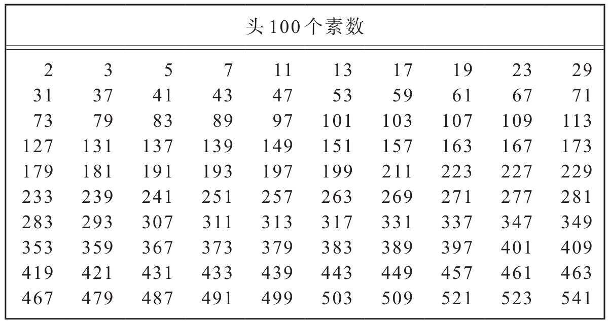

“数学是我们仅有的通用语言，议员先生！”
——朱迪·福斯特（Jodie Foster）
在影片《超时空接触》（Contact）中的台词
当“阿普卡”从西伯利亚集中营回到布达佩斯后，保罗的家庭教育真正开始了。数学当然是核心课程，但保罗的双亲疑心孩子的前途可能不在匈牙利国内，因此将外语教育放在同等重要的地位。虽然夫妇俩都能讲一口流利的德语，但他们还是聘用了可恨的德国小姐来照顾保罗，帮助他掌握德语。而保罗的父亲在西伯利亚身陷囹圄的时候，曾通过学习法语和英语来分散对严寒和饥饿的注意。回国后他就亲自给儿子教这两门外语。众所周知，匈牙利人在学说外语时很难摆脱他们的口音，即使是跟着以此种语言为母语的人学也不例外。拉约什·爱多士曾为了改进自己的英语发音而煞费苦心，并在英语书上使用了一些像密码一样的发音记号。他把这套记号传给了儿子，后者又添加了自己的一些古怪的记号。爱多士对一位匈牙利记者说过：“我不满10岁就能讲流利的英语了。”流利？也许吧，肯定还很生动，但却带着这么重的口音，以致一位为爱多士拍纪录片的制片人感到有必要给爱多士所讲的话都加上英文字幕。爱多士的朋友们偶尔听到他母亲给他上英文课，往往会被逗乐。他母亲会问：“帕尔科，水果‘szilva’(1)在英文里怎么说？”
“Plimm，妈妈，plimm！”爱多士自信地回答。
爱多士的父母同时开始向他讲授数学这门通用语言，他很快就学会了这门语言，不带任何口音。音乐与数学两者通常都被认为是通用语言，但数学在这方面更为名副其实。爱多士在私下里称音乐为“噪音”，尽管他经常欣赏音乐。一种文化的音乐对另一种文化来说，如若不全是噪音，往往也难以得到欣赏。音乐可以传达情感，但即使这样说也不很确切。有些人从贝多芬第五交响乐的开头几小节能听出命运在敲响大门，而另一些人听到的却可能是魔鬼的笑声：“哈哈，哈，哈！”从另一个星球上来的客人，即使能听到音乐声，多半也不会朝附近的唱片店走去的。当外星来客靠近我们时，试图用歌声来表示问候大概也不会成功。在这种场合，数学可能会起到更好的作用。数学，正如朱迪·福斯特扮演的角色对那位参议员所说的，是我们有理由指望能用来与外星人对话的一种通用语言。毕达哥拉斯坚持“万物皆数”或许不全对，但数可能是所有人都能理解的东西。1加1等于2无论在猎户星座参宿四还是在布达佩斯都正确。不管我们的外星朋友有几个手指头，他们都将以类同的方法来计数。
不同的文化有不同的数学研究风格；匈牙利数学的风格就不同于法国或德国。这与近来大学课程中关于“数学是一种社会建构的主张”大相径庭。按照这种所谓“民族数学”（ethnomathematics）的观点，西方数学在依赖于纯粹推理的同时，也像音乐和文学一样受着性、权力和政治等问题的影响。而正如爱德华·罗斯坦（Edward Rothstein）在《纽约时报》上所指出的那样，这意味着“西方标准的数学研究方法是有局限的、不完善的，它仅仅是诸多方法中的一条”。
数学家是有限的、有缺陷的生物，他们以毕生精力试图理解无限与完美。这样做必然会产生一些问题和误解。潮流与时尚，政治与迂腐，这一切都会影响数学知识跌跌撞撞的进步。然而，所有这些因素都不能影响数学的有效性。罗斯坦写道：“有许多不同的方法来证明一个圆的周长与其直径之比等于常数，人们称这个数为π。牧师、农夫以及建筑工人使用这个比率的初衷与目的不尽相同，因此，这个比率可以被叫作pi，或zed，或‘密尔沃基’（Milwaukee）。但这个数本身及其意义却不受文化机制的影响。”
那么，数学如果确是一种通用语言，人们怎样用它来打招呼呢？关心SETI（Search for Extraterrestrial Intelligence，即寻找外星智慧）的科学家们对此已经提出了许多设想，并且认为最好的办法就是把我们的外星朋友看作是聪明的孩子，给他们数数。开始试验：一，二，三。
就这样数——嘟，嘟-嘟，嘟-嘟-嘟，嘟-嘟-嘟-嘟——也许行得通，不过某些自然现象也很可能会产生这样的计数序列。有些外星智慧的探索者，如卡尔·萨根（Carl Sagan），则相信“可以明确是由智慧生物发出的”最简单的信号大概是头十几个素数组成的数列。难以想象自然出现的物理现象会发出这样的数列信号，同样难以想象一种有智慧的生物会不理解这种信号。
人们自从会计数以来就对素数情有独钟。所谓素数就是只能被1和它自身整除的整数。头几个素数是2，3，5，7，11（习惯上1不算素数）。数15是一个合数，即非素数，因为它是3和5的乘积。素数常常被称作算术的原子，因为每一个整数要么是素数，要么可以用唯一的方式写成几个较小素数的乘积。（顺便说一句，这不是一个观察结果，而是一条定理。它对所有的整数都成立，但数学家们曾发明了一些奇异的数类，这条定理在这些数类中却不成立。）
数学家生命的圆弧，往往能反映数学的历史。素数在数学发展的早期就已被发现，而像保罗·爱多士这样的青年数学家，他们的数学生涯往往也是从对素数发生兴趣开始的。确定一个数是素数还是合数是一种智力游戏，它呼唤像爱多士这样的计算奇才。在分解了成百上千个整数以后，这种游戏逐渐变得乏味，头角初露的数学家很可能会想知道是否存在最大的素数，或者说素数个数是否无限？请看看素数表，你能看出某种规律吗？如果看不出来，请不要懊丧。没有人能看出规律来。你会发现最初的几十个素数无规则地成群出现，相互间隔颇近。但当你往后看下去，素数之间的平均距离似乎不断增大。有时也会看到两三个靠得较近的大素数，但总的趋势是清楚的：越往后看，素数变得越稀疏。素数会不会穷竭？是否存在最大的素数？

人类迄今知道的最大的素数于1998年1月27日被19岁的南加利福尼亚大学二年级学生罗兰·克拉克森（Roland Clarkson）发现。克拉克森在一台老式的奔腾200兆赫计算机上发现了有909 526位数字的素数，使用的程序由来自佛罗里达的计算机程序员乔治·沃尔特曼（George Woltman）编写。沃尔特曼的程序在寻找所谓的梅森素数，因法国神父马林·梅森（Marin Mersenne）在17世纪研究过这些数而得此名。梅森素数乃是那些比2的幂小1的素数，用符号表示就是2p-1。数3是一个梅森素数，因为它等于22-1；数7也是梅森素数（23-1）；还有31（25-1）和127（27-1）。在1635年以前人们一直以为只要p本身是素数，则2p-1就是素数，但这一年赫达里卡斯·雷吉乌斯（Hudalricus Regius）指出了211-1=2 047等于23×89。
20世纪，数学家们发明了一些快速计算机算法来检验一个梅森数是不是素数。直到最近，寻找大梅森素数的工作常常是由一些工程师做的，这些工程师希望用他们的超速计算机来进行一次彻底的探索。但1996年沃尔特曼发布的“大型因特网梅森素数搜索”（GIMPS）程序，推翻了超级计算机的优越地位。全世界有数以千计的计算机迷下载了沃尔特曼的程序，并保存了一个检验梅森素数的程序模块。所有这些功能不强的桌上计算机联合起来发挥的威力，竟超过了速度最快的超级计算机，而其中有许多是为了沃尔特曼的GIMPS计划而从垃圾堆里捡回来的过时机型。不久GIMPS计划就旗开得胜，算出了一个有420 921位数字的素数。一年后GIMPS计划又取得了另一项成果。世界各地更多的计算机迷开始自愿贡献他们的业余计算机时间。多亏圣何塞的一位软件开发经理斯科特·库罗夫斯基（Scott Kurowski）编写的一个聪明的程序，寻找梅森素数变成了全自动过程。任何人只要有PC机就可以下载这个程序，让它在屏幕上安静地运行，使无数本来会被浪费的计算机空闲时间得到了有效利用。罗兰·克拉克森，这个以记忆π数字为业余爱好的小伙子，成为4 000多名参与者中幸运的赢家，他的计算机为他在数学史上争得了一席之地。但克拉克森知道他在那里不可能久留。寻找最大素数是永无尽头的，原因很简单：根本就不存在最大素数。素数的个数是无限的。
关于素数无限性的证明，可以在数学乃至所有科学领域中迄今最有影响的著作之一欧几里得《几何原本》中找到。在欧几里得以前，数学只是一堆表面上自明的命题以及可以运用逻辑从中导出的推论。虽然进步很大，结果丰富，但这种方法的特殊性质掩盖了不同结果之间的关系，使进一步发展变得困难。
欧几里得对这座库房进行了彻底的清理。他从定义一些基本对象出发，例如点、线、面等。他接着写下了一组涉及这些对象之间关系的命题，他认为这些命题是如此显而易见，对它们不需要证明。例如，一条这样的公理是说：如果两个对象分别与同一个对象相等，那么它们彼此相等。这命题似乎既明显，又不能归结为更简单的真理。如果说素数是算术的原子，那么公理就是推理的原子。从这些公理出发，运用简单的逻辑法则，欧几里得指出大量希腊人已知的几何与算术真理可以获得证明。
两千多年来，欧几里得的数学知识一直被认为是良好教育的重要组成部分。托马斯·霍布斯(2)由于某种原因直到40岁时才开始注意《原本》，但他一读这本著作，便备感惊讶。约翰·奥布里(3)记述了这个偶然发生的故事，他写道：一天，“在一间绅士图书馆里，他打开了欧几里得《原本》，翻到第1卷命题47［毕达哥拉斯定理］，读了命题后他说：‘上帝啊！这是不可能的。’于是便去读该命题的证明，这使他回溯到他已经读过的一个命题。该命题又使他回溯到另一个读过的命题。如此反复，最后他终于相信这定理是真理。这使他爱上了几何学”。戴维·赫伯特·唐纳德（David Herbert Donald）则描述过亚伯拉罕·林肯的一个故事：“林肯像他的大多数同时代人一样，相信思维能力像肌肉一样，也可以通过严格的锻炼而得到加强……他设法搞到了一本欧几里得的《几何原本》并下决心亲自证明其中的一些定理和问题。1860年他不无自豪地报告说他曾研究并基本掌握了欧几里得《原本》的前六卷。”
伯特兰·罗素（Bertrand Russell）回忆他11岁时初次接触欧几里得著作的情形，认为这是“我一生中最重大的事件之一，就像初恋一样令人陶醉。我不能想象世上还会有其他更甜美的东西。从那一刻起，直到我38岁，数学始终是我的主要兴趣和我的欢愉的重要源泉”。
当保罗·爱多士的父亲给他讲解欧几里得关于素数无限性的证明时，他比罗素还小1岁。这使他终身为之着迷。这个证明，可以说是整个数学中最优美的证明之一，当然肯定是属于“天书”的证明之一。欧几里得的方法类似于毕达哥拉斯用来证明2的平方根是无理数的方法。他首先假设与他想要证明的命题相反的结论，然后看这会将他引向何处。换句话说，欧几里得假设存在一个最大的素数，记之为PN（如果使用PN这样的未知量使你感到不舒服，假想最大的素数是7或11，或其他某个小素数，这会帮助你澄清逻辑思路）。如果这一假设导致矛盾，那么逻辑结论必然是假设不对：不存在最大素数。
证明的第一步是将所有的素数相乘而得到一个大数：
A=2×3×5×7×11×……×PN
A显然可以被每一个素数整除，这正是我们构造它的原则。现在将A加上1，然后考察所得的结果数，我们记之为P：
P=A+1=（2×3×5×7×11×……×PN）+1
P或者是素数，或者不是素数，二者必居其一。如果P是我们得到的素数，由于P显然大于PN，这与假设PN是最大的素数相矛盾。
每个整数要么是素数，要么是素数的乘积。因此如果P不是素数的话它必能被某个素数整除。用2，3，5，7或其他任何一个不大于PN的素数除P（P=A+1），余数显然为1，这是因为A作为所有这些素数的乘积必然能被它们中任一个整除。于是如果P不是素数，它必定能被大于Pn的一个素数整除。但是我们已经假定没有这样的素数，因此假设P不是素数同样导致矛盾。所以不存在最大的素数，素数的个数是无限的。
如果你不厌其烦地读了上述证明（我希望你确实读了），你可能会感到它真是步步为营。欧几里得的传家宝之一就是精练紧凑的数学推理。总得费时间琢磨分析，没有人能一目十行地阅读数学。即使对那些最流利的“演说者”来说，它也始终是一门外语。爱德华·罗斯坦曾简述原先由普林斯顿老一辈哲学家保罗·贝纳塞拉夫（Paul Benaceraf）提出的这样一个疑难：“如果数学知识超越时空，那么从深居时空之中的地球王国怎样才能得到它呢？”人类的大脑生而能做简单的算术和几何，其余则是后天的发明与创造。数学语言与方法在某种意义上是武装地球智慧生命使之能遨游数学知识宇宙的技术，其难以驾驭是不足为奇的。
爱多士的父亲在使他相信素数有无限多之后，接着又向他展示了另一个漂亮的证明，这不仅促使他终身迷上了素数，而且激发了他后来的一些最著名的结果。父亲问道，两个相邻素数的间隔可以有多远？因为所有大于2的素数都是奇数（2必须刨去，因为按定义，素数就是能被1和其自身整除的数），所以两个大于2的相邻素数之差必定是一个偶数（可用某些小的素数来检验）。这个偶数能有多大呢？爱多士的父亲告诉他说可以找出任意长的整数区间，其中完全没有素数。
例如，你想找出100个连续的合数（即非素数）。首先将从1到101所有的整数相乘，即1×2×3×…×101。数学家们称这个数为101阶乘，并记之为101！，这里惊叹号既是标准记号，同时也提示阶乘很可能是大得惊人的数字。101！就是一个有160位数字的数，约等于9.4×10159。与101！有关的一个有用的事实是：它是从1到101每一个整数的倍数。因为101！是2的倍数，它加上2所得的数也是2的倍数；101！是3的倍数，它加上3所得的数也是3的倍数。依次类推直至101。于是，从101！+2到101！+101这100个数中没有一个是素数。这种方法——数学家称之为构造方法——可以用来发现任意长的合整数区间。你想要1 000个相继的合数吗？很简单，从1 001！+2开始，到1 001！+1 001为止。不过请不要劳神把这些数写出来，因为它们都是2 568位长的数！
素数却又可以互相非常靠近。像素数29和31，中间只隔了一个数，这样一对素数被称为孪生素数。一个著名的未决问题是：是否有无限多对孪生素数？目前已知最大的孪生素数是1994年借助于超级计算机发现的，这是一对4 932位长的数——697 053 813×216 352±1。“很清楚是有无限多对孪生素数，但我想在最近的将来没有人能证明这一结果。”每当讲解数学难题时，爱多士总喜欢这样说，孪生素数猜想回绝了所有证明它的尝试，大多数数学家认为这样一个证明绝不会很快出现。
综上所述，一方面素数之间可以相隔任意远，另一方面孪生素数又可能有无限多，这足以说明素数分布是多么不可捉摸！没有任何神奇的公式可以确切地告诉你哪些数是素数，哪些数不是素数。判别一个数是不是素数唯一可靠的办法是费力地用比它小的每个素数逐个相除。(4)高斯曾宣称，判定一个数是素数还是合数的问题是“算术中最重要也是最有用的问题之一……这门科学自身的尊严要求我们探索一切可能的方法来解决这个如此优美、如此著名的问题”。
从父亲那儿听来的这些关于素数的证明与猜想，在年仅10岁的保罗·爱多士心中激起了对素数及其分布的终身迷恋，这将引出20世纪最优美、最出人意料的一些数学结果。第一个这样的结果7年后就问世了。然而，父亲的课程最重要的结果是使保罗意识到自己将会成为一名数学家，虽然他同样迷恋天上的星星，并认为自己也可能成为一名天文学家。
在11岁时，爱多士才第一次进了学校，上的是塔瓦茨梅泽街预科学校六年级。不管严格的课堂纪律使他独立的心智忍受了怎样的压抑，爱多士仍然竭力争取在班上名列前茅。他唯一没能得到A的科目是绘画，他这门课的成绩是B。“学习对我来说并不是一件难事。”他后来回忆说。他最喜欢的课是历史，并且终身保持了这种兴趣。
对爱多士来说，数学不仅仅是学校的一门课程。爱多士进入预科学校的那一年，也是他开始注目《中学数学杂志》（Középiskolai Mathematikai Lapok）之日，这份杂志简称KöMal，是一位来自杰尔（Györ）、名叫丹尼尔·阿拉尼（Dániel Arany）的杰出而年轻的中学数学教师在1894年创办的。正如阿拉尼所说，这份杂志的目的是要“为教师和学生提供一本丰富的习题集”。三年后该杂志由拉斯洛·拉茨接办，拉茨当时是11岁的冯·诺伊曼和12岁的尤金·魏格纳的“神奇”老师。在拉茨指导下，KöMal由一份只比数学习题集层次稍高的刊物发展成了一块非常成功的培育数学人才的园地。
每个月的KöMal都要刊登当时一些著名数学家和数学教育家的文章。但是除了这些有趣的文章，真正有吸引力的是那些竞赛题。在收到每月一期的KöMal后，全匈牙利有才华的数学学生就会忙碌起来，尽其所能对这些设计得很高明、并且在难度上按不同年龄分组的问题做出最漂亮的解答。答题人将他们的解答寄回KöMal，那里有一个志愿审查组给这些答卷评分。最好的解答将在KöMal上发表，这是一种可能激发了爱多士对数学“天书”的幻想的实践。到每年年底，各轮解题竞赛优胜者的照片将刊登出来。多年以后，爱多士的一位解题伙伴马尔塔·斯韦德（Marta Svéd）回忆说：“解题是最主要的事。回报是，如果作为一名勤奋的解题者，你的照片出现在年底的杂志上，你会感到仿佛登上了世界之巅。”这种方法使全匈牙利的天才学生变得相互知名，并认为自己已开始成为数学家，成为数学界的一部分。诺贝尔经济学奖得主约翰·豪尔绍尼（John Harsanyi），物理学家拉斯洛·蒂萨（László Tisza）和费伦茨·梅泽伊（Ferenc Mezei），以及数学家乔治·波利亚（George Polya）和加布里埃尔·塞戈（Gabriel Szegö）等杰出的科学家，早年都是KöMal解题竞赛的优胜者。
在爱多士拿起KöMal 40年之后，另一位神童，爱多士的门生拉斯洛·洛瓦斯（Lászlo Lovász）第一次看到了这份杂志。“真是一见钟情。”洛瓦斯回忆说。这位八年级学生捡起的这期KöMal包含有当时已成为世界著名数学家但还继续给KöMal投稿的保罗·爱多士的一篇文章。“这篇文章我至少读了20遍，”洛瓦斯在KöMal 100周年纪念专刊上写道，“当我明白我能够理解伟大的数学家在想些什么时，我感到无比惊喜和激动。”洛瓦斯对KöMal的热爱为这杂志的许多读者所共享。当乔治·塞凯赖什（George Szekeres）在二战期间被迫逃离匈牙利时，曾想方设法随身携带着他收藏的笨重的过刊合订本，它跟着他从新加坡辗转到澳大利亚，至今仍在他的书架上占据着一席风光之地。
爱多士多产的数学生涯可以说正是从他在KöMal上发表题解开始的，最早的一篇出现在1926年12月。爱多士与另一位当时尚未谋面的学生保罗·图兰（Paul Turán）是仅有的两位能解出某道难题的人，这样就产生了爱多士在与他人的长期合作生涯中第一篇联合发表的作品。图兰后来成为爱多士最亲密的朋友和最重要的合作者之一。1926年爱多士的照片第一次出现在优胜解题者之中。这张照片也是他在公共汽车月票上反复使用的。照片中的爱多士身着开领衬衣，双目直视相机，面无笑容，非常严肃。他看起来比其他优胜者年龄要小，而大多数优胜者则衣冠整齐，衣领上浆，还系着领结，不过表情同样严肃。在这一年所有的优胜者中只有一位女性，这位留一头短发的年轻女子名叫埃丝特·克莱因（Esther Klein），她后来也成为爱多士的终身好友，并为他最重要和最有影响的论文之一提供了启示。
爱多士在塔瓦茨梅泽学校待了两年，接着回家自学了一年，然后为了结束高中阶段的学习，他又进了圣·伊斯万预科学校，他父亲是这所中学的数学和物理教师。1920年，随着匈牙利公社的垮台以及《特里亚农条约》导致的匈牙利分裂，反犹主义甚嚣尘上，一个所谓的“名额控制法”将大学中犹太人的入学率限制在录取总数的6%。犹太大学生越来越感到惶惑不安。“我12岁时就知道我迟早得离开匈牙利，因为我是一个犹太人。”爱多士后来这样说。不过在此之前，尽管有“名额控制法”和暴力反犹活动，爱多士从圣伊斯万学校毕业后还是进了布达佩斯科学大学。
在大学里爱多士很快就成为10余名青年数学家的中心人物。这些人中的大多数他过去只是通过KöMal上模糊的照片得知，现在才与他们当面结识，今后伴随他一生的数学讨论与数学友谊从此开始。同学们之间的讨论很快就越出课堂，来到大街上，佩斯城内咖啡馆里，或是在布达市区美丽葱郁的山丘之间的漫步，他们学会了不用纸和笔研究数学。然而，他们最喜欢的还是在布达佩斯城市公园内一座雕像下的聚会。
城市公园位于佩斯城中央，布达佩斯许多市民都喜欢在那里消磨午后的休闲时光。公园处在笔直而宽阔的安德拉西大街尽头。安德拉西大街是香榭丽舍大街的仿制品，而城市公园建造则受到了布洛涅森林公园的启发。城市公园与沿安德拉西大街通向公园的欧洲第一条地铁都是1896年匈牙利千年庆典工程的一部分。安德拉西大街与城市公园都比它们的法国原型要略微短些；同时前者不及香榭丽舍大街宽，而后者则比布洛涅公园多了些尘土。尽管如此，夏日的午后，人们还是喜欢上这儿来划船，参观动物园和马戏团，或是围绕着装饰性的城堡散步。冬天则可以在湖上滑冰。而无论冬夏，在一战后的数十年间，只要你知道上哪儿找的话，你都可以加入到一群青年男女中去，跟他们一起进行严肃的数学游戏。
城市公园里那座瓦依达胡尼亚城堡，是一座外观凌乱的混合式建筑，一部体现各种匈牙利建筑风格的百科全书。在它的鹅卵石庭院中央，有一座巨大的青铜人物座像，雕塑中的人物脸部完全被厚袍上的头巾所遮掩，目光却显然注视着在他膝上铺开的一本大书，一本他正在孜孜不倦地撰写的著作。这是一座无名氏雕像，象征了一位想象中的中世纪匈牙利编年史作者。这座无名氏雕像是一个理想的聚会场所：容易找到，又远离闹区；这儿绿树成荫，周围有一圈长凳。在20世纪30年代初，爱多士每周都有一两次从他离公园不远的住所步行去这座雕像会见他的大学同学。他们在那里无话不谈，但主要的话题是数学。大家在长凳上坐下，无名氏雕像梦幻般地浮现在上方。他们模仿无名雕像的姿势，凝神俯视着膝上打开的笔记本。当这种非正式的讨论班刚刚开始时，无论是爱多士还是他的朋友们，都还没有在专业杂志上发表过一篇文章，他们都像无名氏一样默默无闻，虽然情况不久就有了变化。
即使没有爱多士，这也是一群绝不比其他地方逊色的青年数学家。十来名大学生，定期在公园里聚会解决数学问题，但却从来没有把自己看成一个小组，小组这个称呼后来才出现。其中最著名的成员有保罗·图兰、蒂博尔·高洛伊（Tibor Gallai）和乔治·塞凯赖什，他们后来都成了第一流的数学家，并且都是爱多士最早的合作者。
这些在雕像前聚会的数学家全是犹太人，虽然他们自己很少意识到这一事实。多年后，安德鲁·瓦佐尼在与爱多士的一次谈话中回忆往事时提到，他“感到在布达佩斯的非犹太人与犹太人之间隔着一堵墙”。爱多士说他从来没有注意到这一点，于是瓦佐尼便请他举几个当时结交过的非犹太人朋友的名字。爱多士一个也说不出来。“我从未想过这方面的问题。”他承认说。
进大学后不久，爱多士就做出了他的第一个重要的数学贡献。他父亲向他讲解的素数的奇异分布，将爱多士引进了数论这个与整数性质有关的数学领域。在这方面爱多士并非独一无二，大多数数学家最初步入数学领域，都是受到优美的数论结果和富有魅力的数论问题吸引。数学中许多其他分支对门外汉却并不那么殷勤好客。例如在代数拓扑和群论中，你可能会花费数年的时间才能理解其中的问题，更不用说要掌握解决这些问题的技巧与方法了。另一方面，数论学家们感兴趣的问题，有许多却只需具备简单的算术知识就能理解，虽然这些问题解决起来极端困难。一个典型的例子是贝特朗假设(5)，爱多士的第一篇论文，讨论的正是这一假设。
当儒勒·凡尔纳（Jules Verne）为某个科学问题所困惑时，他常常会求助于法国数学家约瑟夫·贝特朗（Joseph Bertrand），贝特朗是法国科学院院士，他在天体轨道问题和概率论方面做过很重要的工作，但最为人知的却是他1845年提出的一个富有启发性的猜想。这位时年22岁的数学家假设，在每个整数和它的2倍数之间至少有一个素数。容易验证贝特朗假设对较小的数是成立的。例如3和6之间有素数5；15和30之间有素数17，19，23和29。利用当时的数学用表，贝特朗可以对成千上万的数来验证他的猜想。这种验证会令人增强信心，但要使贝特朗的猜想升格为一条定理，则必须进行严格的证明。5年之后，俄国数学家帕夫努季·切比雪夫（Pafnuty Chebychev）为贝特朗猜想找到了一个证明，这就是现在所称的切比雪夫定理(6)。
切比雪夫关于贝特朗猜想的证明是对的，但却冗长难懂。有时困难的证明难以避免，但某些繁难的证明恰恰反映了对问题的本质还缺乏深入的了解。简化改进老的证明，这也是数学事业的重要部分，它往往能引出崭新的见解，用来解决新问题，建立更漂亮、更全面的理论。数学家吉安-卡洛·罗塔曾评论道：“在3 000余种刊登创造性数学研究结果的杂志中，翻阅任意一种，你很快就会发现：已发表的论文中难得有几篇解决了尚未解决的问题。绝大多数的数学研究论文关心的不是证明，而是重新证明；不是公理化，而是重新公理化；不是发明，而是统一与精炼；简言之，即托马斯·库恩（Thomas Kuhn）所谓的‘整理’（tidying up）。”在80多年的时间里，切比雪夫定理证明之困难似乎是理所当然的事情。但现在年轻的保罗·爱多士却看到了这个证明怎样可以得到“整理”。
爱多士对切比雪夫定理的新证明非常简单，大学本科学生就能看懂。爱多士在大学的一个讨论班上报告了自己的证明，听众们本来都应该能听懂，但情况却并非如此。爱多士绝不是一个优秀的演讲者，至少在通常的数学意义上是如此，虽然在小范围或一对一的情况下他可谓是一个出色的教师。爱多士后来经常面对大群有鉴赏力的听众。这时他已变成一个演讲老手——他的演讲是数学、笑话和逸闻的混合，这使他的同事给他起了一个绰号叫“数学家中的鲍伯·霍普(7)”。但大学时代的爱多士还没有这样的口才。对参加讨论班的人来说，他们唯一听明白的是：爱多士认为他已得到切比雪夫定理的一个简洁的证明。爱多士的写作风格也好不了多少；没有人能看懂他撰写的论述其证明的那篇文章。“证明一条数学定理是一回事，将它表述出来使同事们能理解它又是另一回事，”爱多士承认道，“当时我还缺乏经验。”
爱多士的父亲不能判断他儿子宣称的关于切比雪夫定理的证明是否正确，但他知道有人能。据安德鲁·瓦佐尼回忆，他说服了塞格德大学的一位教授、当时著名的匈牙利数学家拉斯洛·卡尔马（László Kálmár）“拨冗读一读爱多士的想法”。卡尔马花了一整天的时间审阅了这篇论文，下午3点，他走出办公室，并且如爱多士在无名氏小组的一位朋友马尔塔·斯韦德所说的那样，相信爱多士的证明“货真价实”。卡尔马用德文改写了这篇论文，并将它在一份小的数学杂志塞格德《学报》上发表出来。卡尔马并没有在文章上署名，但他的这种工作方式却成为爱多士今后所有合作的先声。正如爱多士的合作者之一阿瑟·斯通（Arthur H. Stone）所说：“保罗撰写合作论文的方式，对他来说主要是传达自己这方面论证的实质；至于实际完成论文，则是另一位合作者的事情了。（我相信大仲马也是采用了某种类似的做法写小说的。）”
卡尔马在为爱多士的论文所写的引言中提到：爱多士的证明与伟大的印度数学家拉马努詹早先给出的一个证明有某种类似之处，这一联系成为激励爱多士前进的动力源泉。拉马努詹的生平是数学史上最动人的白手起家的故事。他1887年生于印度南部马德拉斯市郊一个贫寒的家庭，这个地区在北方佬眼里既落后又愚昧，与布达佩斯可以说有天壤之别。布达佩斯提供了为培养像保罗·爱多士这样的天才所需要的一切，而拉马努詹则是从过了时的教科书中自学数学，并发现了一些他自己也不知其价值的结果。最后他提笔给当时领头的英国数学家哈代写了一封信，介绍自己得到的一些定理并请求指导。这封信是这样开始的——
亲爱的先生：
首先请允许我自我介绍，我是马德拉斯港口信托事务所会计部的一名职员，年薪只有20英镑，现年23岁。我没有受过大学教育，但上过正规的中学。离开中学后我一直坚持利用业余时间钻研数学。我没有循着传统的大学课程踏步前进，而是独自开辟了一条新路。我对一般发散级数进行了专门研究，我所获得的结果被本地的数学家们称为“惊人的”。
如果这封来自穷乡僻壤一位无名小职员的信中既谦恭又自傲的态度起初使哈代感到好笑，接下来的10页信笺却使他大为吃惊。“对哈代来说，拉马努詹的这10页定理好像是一座奇异的丛林，其中的树木似曾相识，却又如此奇怪，似乎是来自另一个星球，”罗伯特·卡尼格尔（Robert Kanigel）在其出色的拉马努詹传《认识无限的人》中这样写道。像几乎所有活跃的数学家一样，哈代经常收到一些怪人寄来的邮件，这些人相信他们已解决了三等分角、化圆为方或其他某个早已被数学家们证明是不可解的问题。拉马努詹用他那大而整齐、清晰的字迹写出来的这些结果是“惊人的”，但却不是显然不可能的。相反，他的这些方程看来是正确的。
要写出这些看来是真正的数学的方程并不是轻而易举的事情。数学家们对老科幻影片中常常出现的满黑板潦草的公式符号总是斥为胡言乱语而不屑一顾。然而，正如其朋友斯诺（C. P. Snow）所说，当哈代终于抽出时间来审阅拉马努詹的方程时，那些“杂乱无章的定理”使他既惊又敬，“这些定理他从来未见过，也从未想到过”。哈代把他的同事和主要合作者利特尔伍德（J. E. Littlewood）请到他在剑桥三一学院的书房，来帮他验证拉马努詹那些奇怪的定理。正如卡尼格尔所描写的那样，到午夜时分，两位数学家已经相信“他们是在审读一位数学天才的论文”。不久哈代和利特尔伍德筹得了一笔经费，并邀请拉马努詹来到剑桥。拉马努詹在剑桥度过了他一生剩下的短暂岁月，33岁时死于肺炎。他在剑桥完成了一批数量不多但却是历史性的论文，同时还留下了一些写满结果的笔记本，这些结果至今还不断被人引用研究。
卡尔马建议爱多士去查阅一下拉马努詹对切比雪夫定理的证明。爱多士钻进图书馆，“在拉马努詹全集中找到了这一证明，我立即以极大的兴趣读了这个证明……两个证明非常相似，而我的证明的优点也许是更为算术化。”爱多士阅读拉马努詹论文的经历导致了他对印度的终身兴趣和对印度数学家的长期支持；同时还引出了一则他喜欢说的玩笑话，这则玩笑话反映了爱多士的一种固执的念头：“我想印度语是最好的语言，因为两个最大的魔鬼衰老和愚蠢在其中发音几乎相同。‘Buda’是老，‘Budu’是蠢。”
爱多士关于切比雪夫定理的证明是一流的成果，对于一个18岁的大学新生而言尤其如此。但正如卡尔马指出的那样，这个证明已被拉马努詹捷足先登。不过爱多士的证明却包含了一些新思想，利用这些思想他很快就以一种全新的方式推广了贝特朗假设。爱多士不久就证明了：在任一大于7的整数与它的2倍数之间至少有2个素数。有趣的是，爱多士的证明同时还告诉了我们关于这些素数的某些性质。根据这条定理，其中至少有一个素数用4除余数为3，同时必有另一个素数用4除余数为1。例如在10和它的2倍数即20之间有素数11，13，17和19。其中11和19被4除余数为3，而13和17被4除余数为1。该定理以及一些相关的推论已足以构成一篇博士论文，而爱多士写出这篇论文时还只是一个二年级的本科生。所有这些成果还使他在数学家内森·法恩（Nathan Fine）所写的一首小诗中赢得了一席之地：
切比雪夫说过的，我再说一遍，
在n与2n之间恒有一个素数！
爱多士关于切比雪夫定理的工作引起了匈牙利以外一些数学家的关注。他很快开始与其中的几位通信，这些人包括曼彻斯特的数论大家路易斯·莫德尔（Louis Mordell），剑桥的理查德·拉多（Richard Rado）与哈罗德·达文波特（Harold Davenport），以及柏林的伊赛·舒尔（Issai Schur）。舒尔立即认识到了爱多士的天才，并开始给自己班上的学生讲授爱多士关于切比雪夫定理的证明，当时爱多士还不满20岁。
当爱多士证明了舒尔关于过剩数的一个猜想以后，舒尔对他的才华便更赏识有加。毕达哥拉斯在探索数字的完美性时，最先注意到了过剩数（或盈数）。在毕达哥拉斯看来，一个数的完美性反映在它的因数上。如果一个数等于所有比它小的因数之和，毕达哥拉斯则称之为完全数。例如6是一个完全数，因为它有因数1，2，3，而它们相加恰好等于6。欧几里得还证明梅森素数——形如2p-1的素数——可通过一个简单的公式而与偶完全数联系起来。没有人知道是否存在奇完全数，但经验告诉我们不存在奇完全数。
一个数，如果它所有的因数相加之和小于它自身，就叫不足数（或亏数）；而如果它所有的因数之和大于它自身，就叫过剩数（或盈数）。所有的素数都是不足数，因为它们唯一比自身小的因数是1。9也是一个不足数，因为其因数1和3相加得4。12则是一个过剩数，因为其因数1，2，3，4，6相加得16。你可以容易地验证18也是一个过剩数。
舒尔的猜想关系到过剩数在全体整数中分布的稠密程度。数学家们用密度的概念来比较数集的大小，包括无限大的数集之大小。例如，偶数集的大小为二分之一，因为恰好有一半的整数是偶数；5的倍数全体所成的集合密度为五分之一。虽然素数有无穷多个，但素数集的密度却是零！也就是说，素数在全体整数中的分布是如此稀疏，以至于随机地选出一个整数，这个数为素数的概率趋于零；绝大多数的数都不是素数。(8)舒尔的猜想是说，过剩数的密度大于零。或者粗略地说，过剩数确实过剩。
爱多士给舒尔猜想找到了一个漂亮而基本的证明。这个证明具有一切好证明所共有的特性，将他进一步引向了所谓加性算术函数的重要工作。爱多士还用大量闲暇时间解决了舒尔提出的其他一些问题，以至于这位德国人称22岁的爱多士为“Zauberer von Budapest”——来自布达佩斯的魔术师。
(1)匈牙利文“李子”。英文应作plum [plʌm]。——译者
(2)托马斯·霍布斯（Thomas Hobbes，1588—1679），英国著名政治哲学家，由于研究欧几里得《几何原本》而创始演绎法。——译者
(3)约翰·奥布里（John Aubrey，1626—1697），英国作家，专门为同时代人写传记。——译者
(4)实际上，只要对小于该数平方根的素数检验即可，这大大节省了劳动。如果一个数被大于其平方根的某数除，得到的是一个小于其平方根的数。例如，36的平方根是6。用小于6的数2去除36，就得到一个大于其平方根的数18。为了证明37是素数，只需用比6小的素数去除它即可，因为如果它有一个大于6的素因数，那么它也必有一个小于6的素因数。——原注
(5)贝特朗假设，又称“贝特朗猜想”，指命题“n与2n之间必有一素数”。——译者
(6)还有其他类似的与素数分布有关的猜想，但证明更为困难。例如，在两个相继平方数之间是否至少有一个素数？比方82与92之间是否有素数？猜想看来是对的，但却迄今未获证明。——原注
(7)鲍伯·霍普（Bob Hope，1903—2003），美国著名喜剧演员。——译者
(8)如我们在后面关于康托尔的讨论中将要看到的那样，两个具有不同密度的集合却可以大小相同。——原注